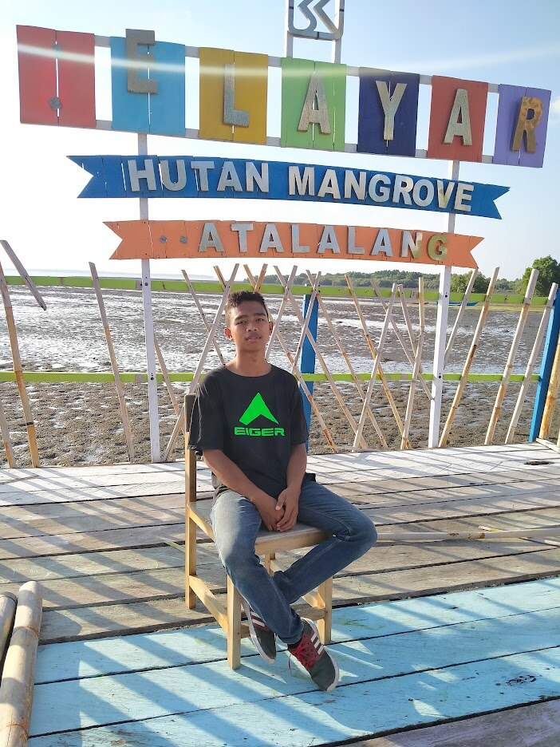

Lomba Video Mars PTA Bali
Editor video · Tingkat Provinsi Bali
Videografi · Editing · Jurnalistik
Saya membuat konten video dan terbiasa mendokumentasikan cerita lewat kamera, penyuntingan, dan peliputan jurnalistik.
Portofolio
Pilih sampul untuk memutar video dalam layar penuh.



Saya mahasiswa Ilmu Hukum di UIN Alauddin Makassar dengan pengalaman di pers mahasiswa, penyuluhan hukum, dan produksi konten digital. Pengalaman sebagai reporter melatih saya mencari ide, melakukan wawancara, dan menyusun informasi lapangan menjadi cerita yang terstruktur.
Dalam produksi video, saya terbiasa menggunakan kamera, drone, dan gimbal. Saya memahami dasar komposisi gambar, sudut kamera, serta pergerakan kamera, dan terus mengembangkan ketiganya lewat praktik.
Kamera, drone, gimbal, komposisi, sudut dan pergerakan kamera.
CapCut Desktop untuk merangkai footage menjadi video.
Penggalian ide, peliputan, wawancara, penulisan berita, dan riset hukum.
Editor video · Tingkat Provinsi Bali
HMJ Ilmu Hukum. Mengelola kegiatan kajian hukum, advokasi mahasiswa, dan penguatan kesadaran politik serta HAM.
Meliput kegiatan, mewawancarai narasumber, menulis berita, dan terlibat dalam kegiatan redaksi.
Koordinator kegiatan penyuluhan di Kajang pada 2025. Terlibat dalam penyuluhan mengenai perlindungan ekosistem laut di Jeneponto pada 2024.
Anggota UKM RITMA dengan keterlibatan dalam kegiatan riset mahasiswa dan kemitraan masyarakat.